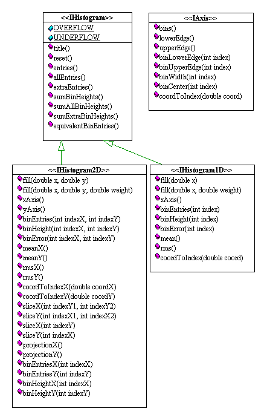

|
Colt 1.2.0 | ||||||||||
| PREV PACKAGE NEXT PACKAGE | FRAMES NO FRAMES | ||||||||||
See:
Description
| Interface Summary | |
| IAxis | An IAxis represents a binned histogram axis. |
| IHistogram | A common base interface for IHistogram1D, IHistogram2D and IHistogram3D. |
| IHistogram1D | A Java interface corresponding to the AIDA 1D Histogram. |
| IHistogram2D | A Java interface corresponding to the AIDA 2D Histogram. |
| IHistogram3D | A Java interface corresponding to the AIDA 3D Histogram. |
Interfaces for compact, extensible, modular and performant histogramming functionality.
File-based I/O can be achieved through the standard Java built-in serialization
mechanism. All classes implement the Serializable interface.
However, the toolkit is entirely decoupled from advanced I/O and visualisation
techniques. It provides data structures and algorithms only.
This toolkit borrows many concepts from HBOOK and the CERN HTL package (C++) largely written by Savrak Sar.
The definition of an abstract histogram interface allows functionality that is provided by external packages, such as plotting or fitting, to be decoupled from the actual implementation of the histogram. This feature paves the way for co-existence of different histogram packages that conform to the abstract interface.
A reference implementation of the interfaces is provided by package hep.aida.ref.
The following code snippet demonstrates example usage:
IHistogram1D h1 = new Histogram1D("my histo 1",10, -2, +2); // 10 bins, min=-2, max=2
|
The following code snippet demonstrates example usage:
double[] xedges = { -5, -1, 0, 1, 5 };
double[] yedges = { -5, -1, 0.2, 0, 0.2, 1, 5 };
double[] zedges = { -5, 0, 7 };
IHistogram1D h1 = new Histogram1D("my histo 1",xedges); //
|
Here are some example histograms, as rendered by Java Analysis Studio.
|
|
And here is an example output of toString(IHistogram2D).
yAxis: Bins=6, Min=0, Max=6 Heights: | X | 0 1 2 3 4 5 6 7 8 9 10 | Sum ---------------------------------------------------------- Y 5 | 30 53 51 52 57 39 65 61 55 49 22 | 534 4 | 43 106 112 96 92 94 107 98 98 110 47 | 1003 3 | 39 134 87 93 102 103 110 90 114 98 51 | 1021 2 | 44 81 113 96 101 86 109 83 111 93 42 | 959 1 | 54 94 103 99 115 92 98 97 103 90 44 | 989 0 | 24 54 52 44 42 56 46 47 56 53 20 | 494 ---------------------------------------------------------- Sum | 234 522 518 480 509 470 535 476 537 493 226 |
And here is a sample 3d histogram output.
An axis (IAxis) describes how one dimension of the problem
space is divided into intervals. Consider the case of a 10 bin histogram in
the range [0,100]. An axis object containing the number of bins
and the interval limits will describe completely how we divide such an interval:
a set of 10 sub-intervals of equal width. This is termed a FixedAxis
and can be constructed as follows
IAxis axis = new FixedAxis(10, 0.0, 100.0); |
VariableAxis and can be constructed
as follows
double[] edges = { 0.0, 10.0, 40.0, 49.0, 50.0, 51.0, 60.0, 100.0 };
IAxis axis = new VariableAxis(edges);
|
IAxis axis = new FixedAxis(2, 0.0, 20.0); // 2 bins, min=0, max=20 |
In this package, a histogram delegates to its axes the task of locating a bin. In other words, information about the lower and upper edges of a bin or the width of a given bin are obtained from the corresponding axis. This is shown in the following code fragment, which demonstrates how the lower and upper edges and width of a given bin can be obtained.
IHistogram1D histo = new Histogram1D("Histo1D", 10, 0.0, 100.0 );
...
histo.
|
An axis always sucessfully maps any arbitrary point drawn from the universe [-infinity,+infinity] to a bin index, because it implicitly defines an additional underflow and overflow bin, both together called extra bins.
IHistogram2D h = new Histogram2D(new FixedAxis(2, 0.0, 100.0), new FixedAxis(2, 0.0, 100.0), ...); y ^ i ... in-range bin, e .. extra bins | +inf | | e | e | e | e 100 - --------------- | e | i | i | e --> in-range == [0,100]2 | --------------- --> universe == [-infinity,+infinity]2 | e | i | i | e --> extra bins == universe - inrange 0 - --------------- | e | e | e | e -inf| -----|-------|------> x -inf 0 100 +inf |
For example if an axis is defined to be new FixedAxis(2, 0.0, 20.0), it has 2 in-range bins plus one for underflow and one for overflow. axis.bins()==2. Its boundaries are [Double.NEGATIVE_INFINITY,0.0), [0.0, 10.0), [10.0, 20.0), [20.0, Double.POSITIVE_INFINITY]. As a consequence point -5.0 maps to bin index IHistogram.UNDERFLOW, point 5.0 maps to bin index 0, 15.0 maps to bin index 1 and 25.0 maps to bin index IHistogram.OVERFLOW.
As a further example, consider the following case: new VariableAxis(new double[] { 10.0, 20.0 }). The axis has 1 in-range bin: axis.bins()==1. Its boundaries are [Double.NEGATIVE_INFINITY,10.0), [10.0, 20.0), [20.0, Double.POSITIVE_INFINITY]. Point 5.0 maps to bin index IHistogram.UNDERFLOW, point 15.0 maps to bin index 0 and 25.0 maps to bin index IHistogram.OVERFLOW.
As can be seen, underflow bins always have an index of IHistogram.UNDERFLOW, whereas overflow outlier bins always have an index of IHistogram.OVERFLOW.
Bins themselves contain information about the data filled into them. They can be asked for various descriptive statistical measures, such as the minimum, maximum, size, mean, rms, variance, etc.
Note that bins (of any kind) only know about their contents. They do not know where they are are located in the histogram to which they belong, nor about their widths or bounds - this information is stored in the axis to which they belong, which also defines the bin layout within a histogram.
A proposed simpler alternative to the current hep.aida.flat classes.
The classes in this directory have been proposed by Mark Donselmann, Wolfgang Hoschek and Tony Johnson as a simpler, easier to use alternative to the classes orignally proposed as the AIDA standard.
Our goals were:
| OLD | # methods | NEW | #methods |
| IHistogram1D | 45 | IHistogram |
9 |
| IHistogram2D | 89 | IHistogram1D | 9 (+ inherited from IHistogram) |
| IHistogram2D | 23(+9 inherited from IHistogram) | ||
| Axis | 8 |
A UML diagram of the classes is given below:

|
Colt 1.2.0 | ||||||||||
| PREV PACKAGE NEXT PACKAGE | FRAMES NO FRAMES | ||||||||||